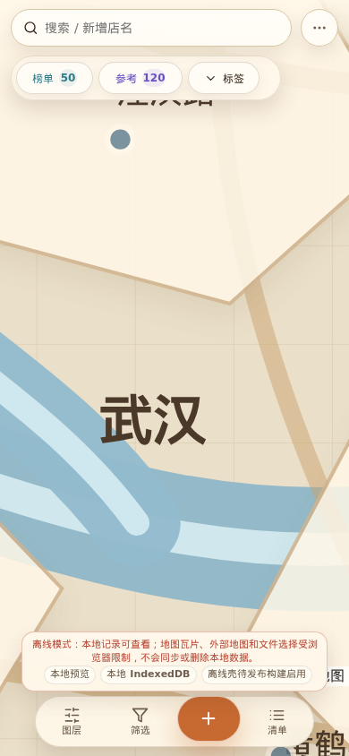
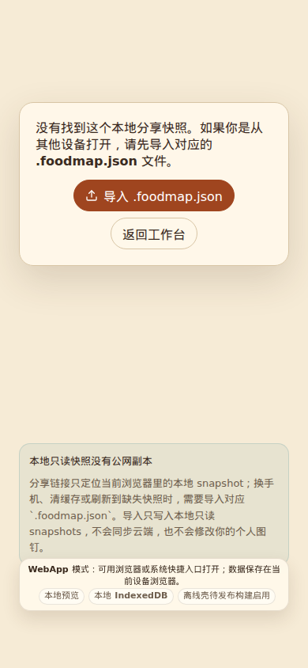
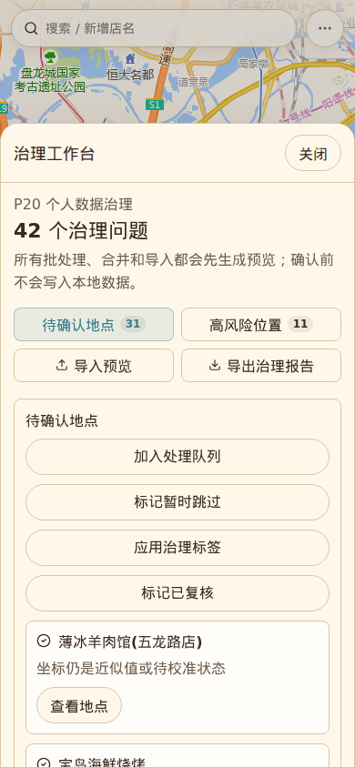
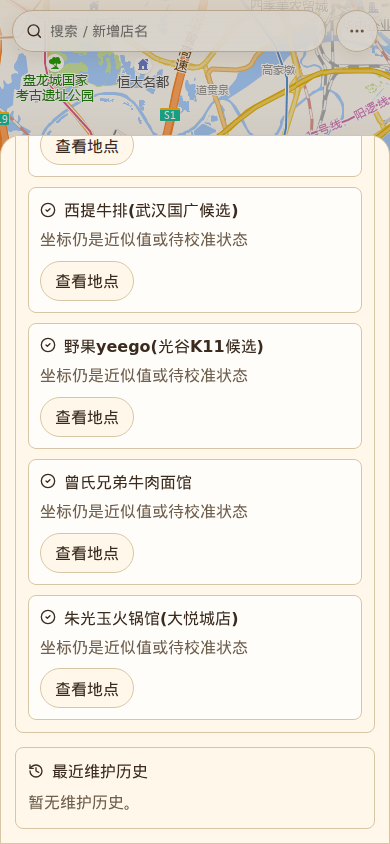
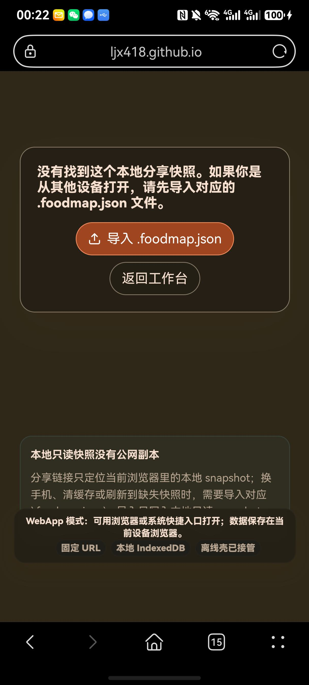
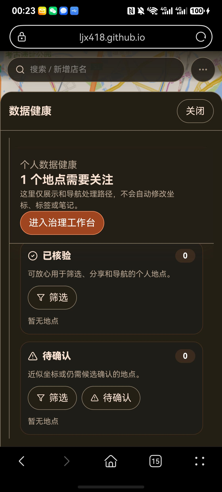
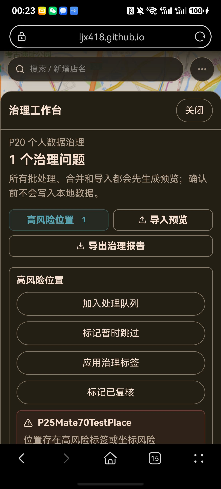
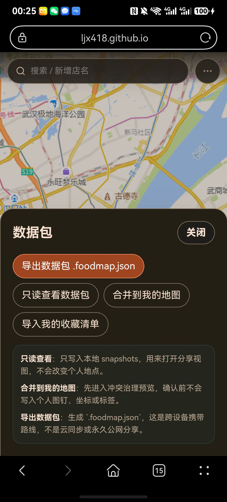

当前实现
Vite + React 纯前端模块化单体；地图、工作台、分享、治理、导入导出、Agent Bridge 和验收脚本在同一静态 WebApp 内运行。
本地数据源为 IndexedDB；跨设备携带依赖 .foodmap.json；GitHub Pages 是当前固定 URL 发布目标。
结论：通过，带明确残余限制。
P26 当前仍可作为最新已接受实现基线。代码、文档、真实数据 scanlist、自动化浏览器回归、线上固定 URL 验证和既有 Mate70 截图证据形成闭环。
边界：本报告不声称 HarmonyOS 原生 HAP、AppGallery 发布、账号、云同步、后端服务、离线地图瓦片、永久公网分享链接或外部实时 POI 搜索完成。
| 门禁 | 结果 | 说明 |
|---|---|---|
npm run build | 通过 | 生产构建完成，生成当前 P26 bundle。 |
npm test -- --run | 通过 | 46 个 domain 单元测试通过。 |
npm run verify:scanlist | 通过 | 50 条武汉 AMap 真实扫街榜数据通过基线校验。 |
npm run verify:p24:webapp | 通过 | Manifest、icon、service worker、WebApp metadata 检查通过。 |
npm run build:pages | 通过 | GitHub Pages profile 构建通过。 |
npm run verify:p25:deployment | 通过 | 本地 dist 静态部署 profile 通过。 |
FOODMAP_DEPLOY_URL=... npm run verify:p25:deployment | 通过 | 线上固定 URL 静态部署检查通过。 |
npm run verify:p26:release | 通过 | 写入 P26 release manifest。 |
npx playwright test ... --project=desktop | 通过 | 60 passed，6 skipped。 |
npx playwright test ... --project=mobile | 通过 | 20 passed，46 skipped；跳过项按项目标签在 desktop 或 targeted 环境执行。 |
FOODMAP_DEPLOY_URL=... npx playwright test ... --grep "P25 deployed" | 通过 | 线上固定 URL 的地图、真实数据和只读分享路径通过。 |
Vite + React 纯前端模块化单体；地图、工作台、分享、治理、导入导出、Agent Bridge 和验收脚本在同一静态 WebApp 内运行。
本地数据源为 IndexedDB；跨设备携带依赖 .foodmap.json；GitHub Pages 是当前固定 URL 发布目标。
WebAppStatus、ShareView、ImportExportDialog、GovernanceWorkbench、MapWorkspace、verify_p26_release.mjs 和 Playwright 用例已接入目标架构。
用户可以看到发布状态、本地 IndexedDB 状态、缺失分享恢复说明、数据包意图、治理预览和取消无写入路径。
本阶段不做账号、云同步、多人协作、永久公网分享链接、FoodMap 业务后端、原生 HAP/AppGallery、离线地图瓦片、自动数据修复或实时 POI 搜索完成声明。








| 审计项 | 结论 | 说明 |
|---|---|---|
| 功能完整性 | 通过 | P26 计划内的发布状态、缺失分享恢复、数据包意图、治理导入预览、取消无写入和 release gate 均已实现并验收。 |
| 测试覆盖 | 通过 | 单元测试、真实 scanlist、P18-P26 desktop 回归、mobile 回归、线上固定 URL E2E 和 P26 targeted 截图覆盖核心风险点。 |
| 文档概念一致性 | 通过 | 已修订 P26 子阶段报告、README、目标架构、验收门槛和开发计划中的历史阻塞状态。 |
| 虚假验收风险 | 可控 | 报告明确区分 headless/mobile viewport、线上固定 URL 和 Mate70 截图证据；未把未自动化的 HarmonyOS 文件选择器说成已通过。 |
Mate70 证据覆盖固定 URL、WebApp 状态、缺失分享恢复、数据健康、治理工作台、数据包、创建、筛选、详情和刷新恢复。
HarmonyOS 系统文件选择器的 .foodmap.json 选择流程没有在实体 Mate70 上自动化；导入预览和取消无写入由 targeted Playwright 证明，并由 Mate70 数据包/治理入口截图证明实机可达。